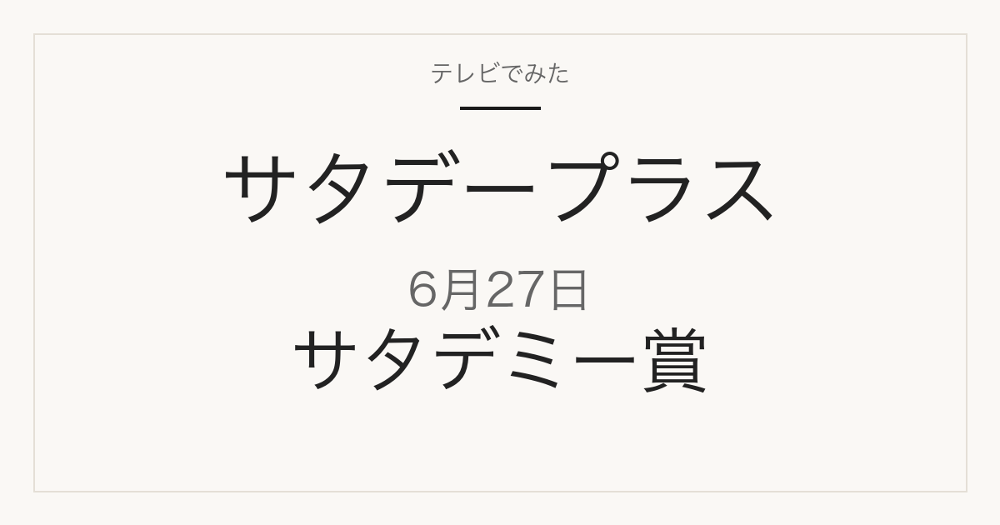

1位／番組掲載価格 232円
国分グループ本社
tabete だし麺 千葉県産はまぐりだし塩らーめん
メーカー商品です。スーパーや通販で扱われます。この回では国分グループ本社の商品が2品ランクインしています。

108g・1食入。番組掲載と同じ単品です。
テレビ紹介商品の記録メディア
2026年6月27日（土）放送
「ひたすら試してランキング」で調査された8品

2026年6月27日放送のサタデープラス「ひたすら試してランキング」は2026年上半期サタデミー賞。2026年上半期の1月から試したテーマは27種類。試した商品総数は293商品！そんな膨大なデータの中から清水アナが実際に試したからこそ分かった“本当によかった”おすすめ商品の上半期大賞を発表!番組掲載価格は138円から2,790円まで幅があります。
この記事には広告・アフィリエイトリンクが含まれます。順位・商品名・番組掲載価格は番組公式情報で確認しています。価格は2026年6月27日時点の番組調べで、現在の販売価格・在庫・取り扱いは変わります。1個あたりの価格は番組掲載価格と商品名の内容量から算出したものです。
| 順位 | ブランド | 商品名 | 番組掲載価格 |
|---|---|---|---|
| 1位 | 国分グループ本社 | tabete だし麺 千葉県産はまぐりだし塩らーめん | 232円 |
| 2位 | 高麗食品 | 黄さんの手造り白菜キムチ | 448円 |
| 3位 | セブン-イレブン | 7プレミアムゴールド 金のマルゲリータ | 689円 |
| 4位 | 内野 | よくばりタオル | 1,320円 |
| 5位 | CO・OP | 発酵バター仕立てのしっとりバウムクーヘン | 138円 |
1位／番組掲載価格 232円
国分グループ本社
メーカー商品です。スーパーや通販で扱われます。この回では国分グループ本社の商品が2品ランクインしています。
108g・1食入。番組掲載と同じ単品です。
2位／番組掲載価格 448円
高麗食品
メーカー商品です。スーパーや通販で扱われます。
3位／番組掲載価格 689円
セブン-イレブン
セブン-イレブンの店舗で販売された商品です。取り扱いは店舗と時期によって変わります。
4位／番組掲載価格 1,320円
内野
メーカー商品です。スーパーや通販で扱われます。
5位／番組掲載価格 138円
CO・OP
CO・OPの自社商品です。CO・OPの店舗・通販で扱われます。
| 順位 | ブランド | 商品名 | 番組掲載価格 |
|---|---|---|---|
| 1位 | 国分グループ本社 | tabete だし麺 千葉県産はまぐりだし塩らーめん | 232円 |
| 2位 | 新宿中村屋 | 逸品どら焼 | 173円 |
| 3位 | ニトリ | IH・ガス火 超軽量 超深型フライパン 26cm(KY067) | 2,790円 |
1位／番組掲載価格 232円
国分グループ本社
メーカー商品です。スーパーや通販で扱われます。この回では国分グループ本社の商品が2品ランクインしています。
108g・1食入。番組掲載と同じ単品です。
2位／番組掲載価格 173円
新宿中村屋
メーカー商品です。スーパーや通販で扱われます。
3位／番組掲載価格 2,790円
ニトリ
ニトリの自社商品です。ニトリの店舗・通販で扱われます。
このランキングで最も安いのはCO・OP「発酵バター仕立てのしっとりバウムクーヘン」の138円、最も高いのはニトリ「IH・ガス火 超軽量 超深型フライパン 26cm(KY067)」の2,790円です。番組1位の国分グループ本社「tabete だし麺 千葉県産はまぐりだし塩らーめん」は232円で、最安の商品とは94円の差があります。
通販では番組と販売単位が違うことがあります。商品名だけでなく内容量と入り数を合わせて確認してください。
2026年6月27日放送の1位は、国分グループ本社「tabete だし麺 千葉県産はまぐりだし塩らーめん」です。番組掲載価格は232円でした。
サタデープラス「ひたすら試してランキング」の番組独自調査によるランキングです。
コンビニで販売された商品と、スーパーや通販で扱われるメーカー商品が混在しています。放送から時間が経っているため、販売が終了している場合があります。
MBS「サタプラ」ひたすら試してランキング 2026年上半期サタデミー賞
順位・商品名・番組掲載価格は2026年6月27日現在の番組公式情報によります。